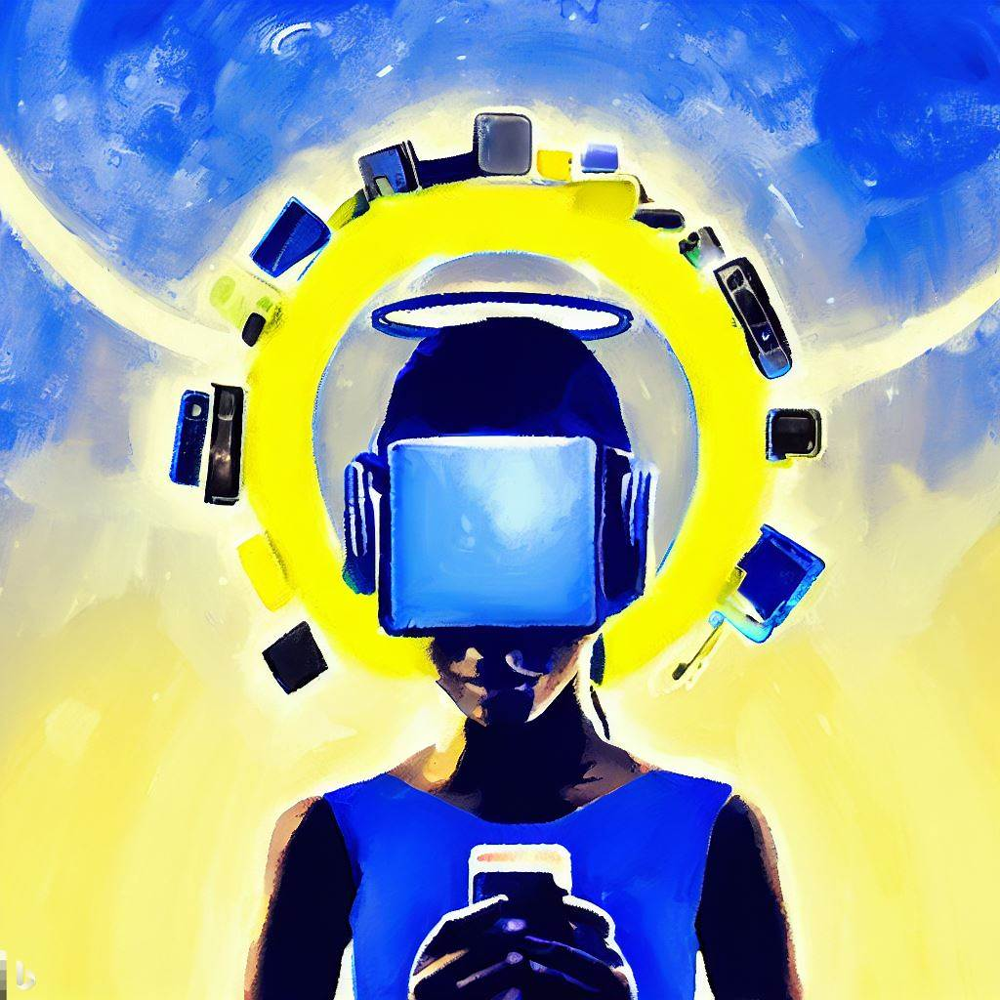
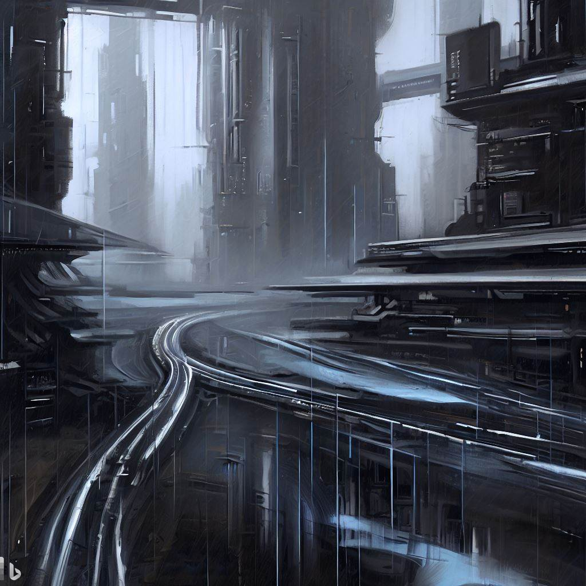

Who are we?
Who will we be?
What is the self?
How will technology change the way WE view I?
These questions have been pondered throughout history. Every individual's answer to these questions helps define their identity. A person’s thoughts, feelings, emotions, skills, knowledge, appearance, family, friends, interests, dislikes, and many more aspects all help define us as a person and build our identity.

Maybe we can download skills and knowledge. Interact with technology in a way that can better our abilities to solve complex problems with ease or instantly learn a new language when travelling.
W I L L T H I S M A K E M E A B E T T E R M E ?
We could also enhance our physical identity through advanced prosthetics allowing us to jump higher, run faster, and hit harder.
W I L L T H I S M A K E M E A B E T T E R M E ?

How about emotional enhancements? Increasing our focus in high-intensity situations and enhancing our ability to cool down, relax and have fun.
W I L L T H I S M A K E M E A B E T T E R M E ?
Further still, our now our old, outdated human hearts, brains and lungs can't keep up with this ever-evolving technical world. Of course, all these need upgrades to keep up, it just makes sense.
W I L L T H I S M A K E M E A B E T T E R M E ?
I have asked this question for years with no answer.
But it is now
I have asked this question for years with no answer.
But it is now
THE YEAR 2247
WE dont look like US anymore. I dont act like ME anymore.

Technology has pushed US further and further, refining our human IDENTITIES.
OR SO WE THOUGHT...
AM I STILL HUMAN?
AM I STILL ME?
AM I STILL ME?